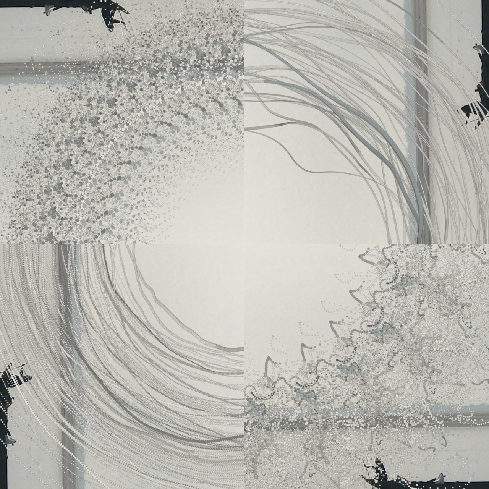

Concept note
This was an experiment to create art using a pre-existing image. The shapes are coloured using the shades of the image, and are then superimposed onto the image itself. The idea was to create a wave on top of still waters. A p5js sketch was created to achieve this effect.
